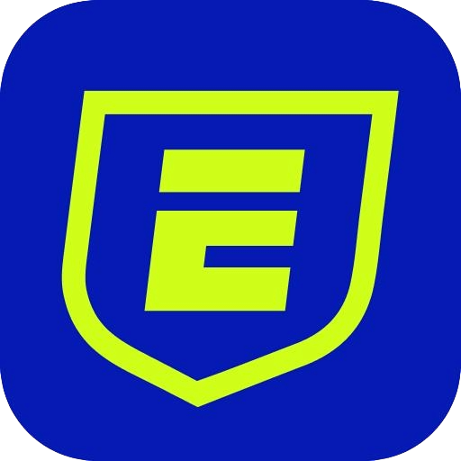
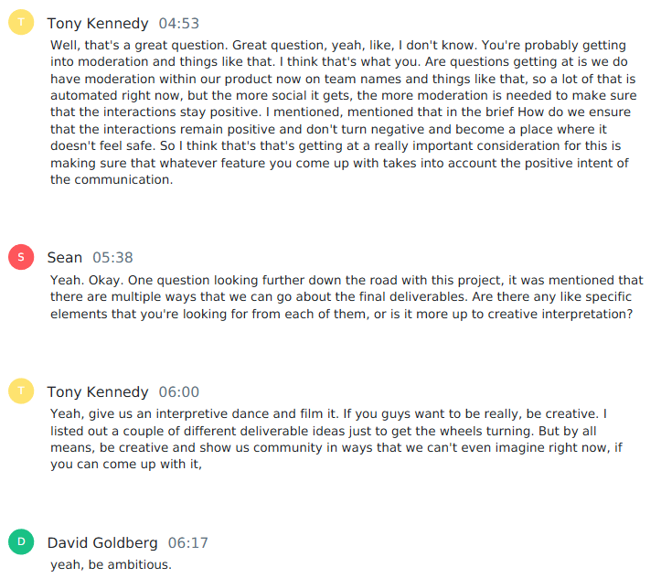
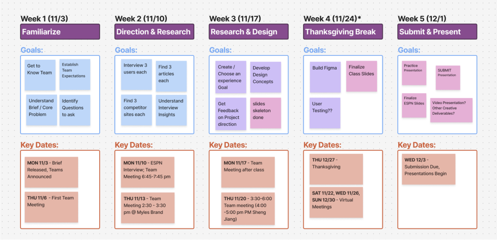
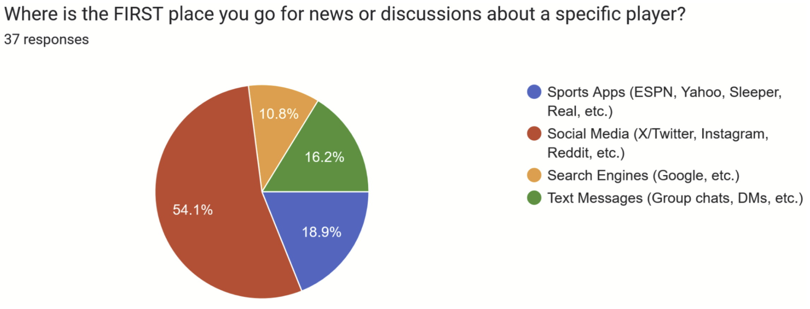
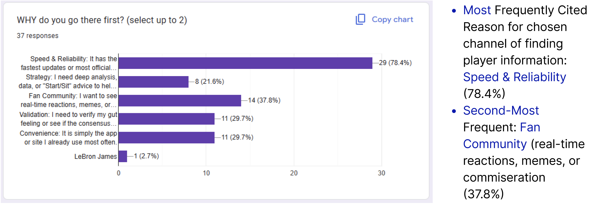
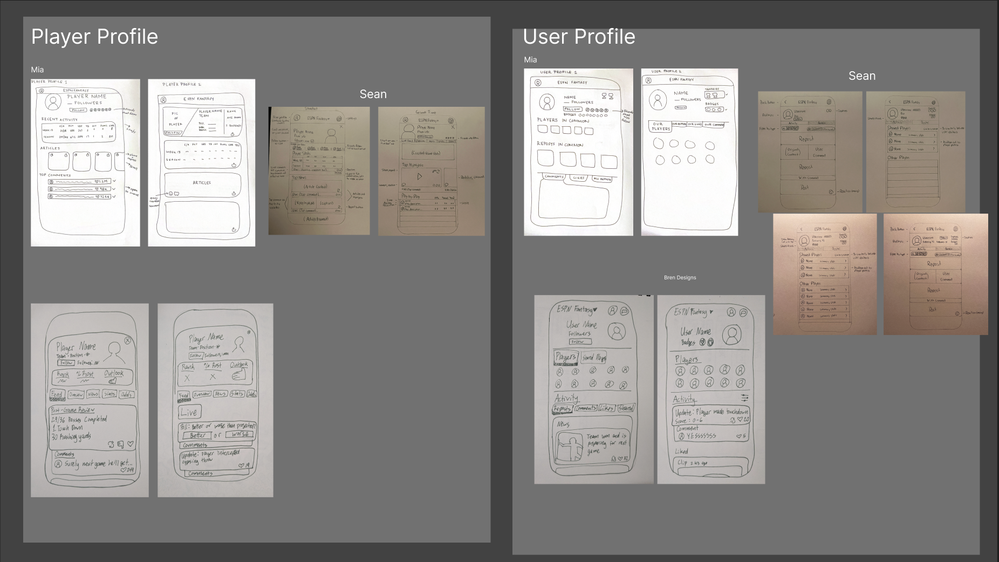
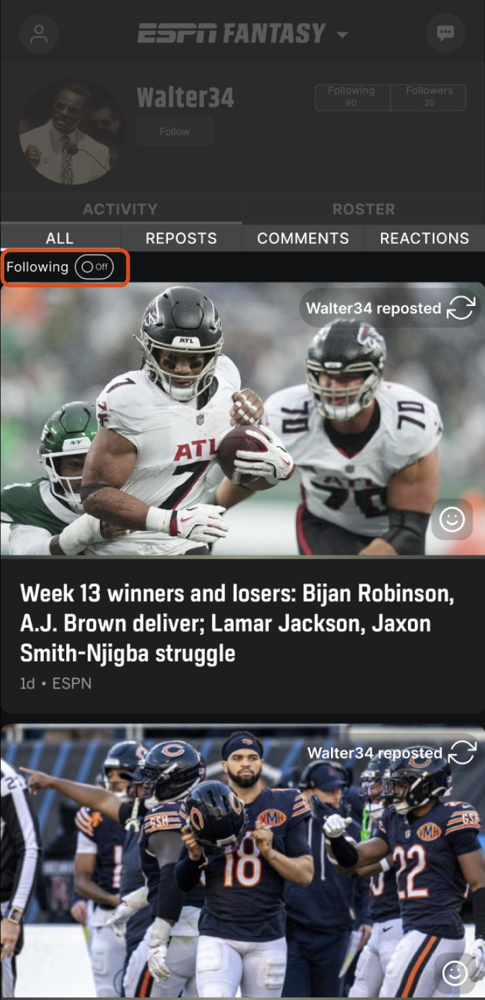
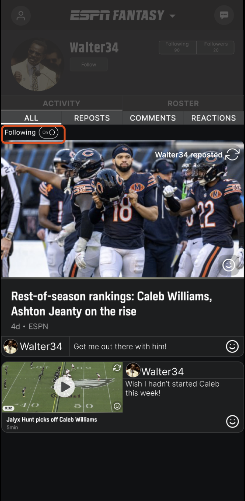

UX research · Product design · ESPN Fantasy Social Feed
Fantasy is better together.
Research with fantasy players revealed an opportunity to bring fast, roster-relevant community activity into the product they already use.

Before designing a feature, we had to find the right problem.
The brief gave us room to explore. Research gave us a reason to choose.
ESPN asked us to think ambitiously about community without prescribing a feature. We spoke with its design team, studied existing fan behavior, surveyed 37 fantasy players, and conducted user interviews. We looked for a need that mattered to fans and made sense inside ESPN Fantasy.


Fans left sports apps when they wanted conversation.
ESPN was credible and fast. Social platforms supplied the reactions and shared experience.
Only 18.9% of respondents said a sports app was their first stop for news or discussion about a player; 54.1% went to social media instead. Speed and reliability mattered most when choosing a source, but fan community was the second-most cited reason.


Make community relevant to the players already on someone’s roster.
Most respondents followed several members of their roster, giving us a natural relevance signal. Rather than building an unbounded social network, we focused the experience on players a fantasy manager already had a reason to care about.
We sketched player profiles, user profiles, reposts, comments, reactions, and filters before combining the strongest ideas into one focused feed.

One switch turns a broad activity feed into a roster-centered conversation.
Keep ESPN’s familiar hierarchy. Add a lightweight path into the reactions surrounding each player.
I led the high-fidelity prototyping effort in Figma. The concept adds a Following filter to the profile activity feed: off, it preserves broader ESPN content; on, it prioritizes posts, reposts, comments, and reactions connected to followed players.
We presented the research and interactive concept to ESPN as the final deliverable. Because this was exploratory concept work, there are no launch metrics to report. Add one concise sentence here if ESPN gave specific feedback on the concept.

